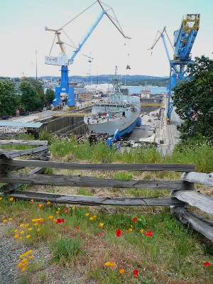

La Cale sèche d'Esquimalt (CSE), en partenariat avec l'industrie de répartion de navires, veut être le meilleur chantier naval de la cô Ouest de l'Amérique du Nord.
La cale sèche d'Esquimalt et ses usagers sont conscients que l'atteinte de cet objectif passe obligatoirement par une gestion respectueuse de l'environnement. Afin de garantir que les activités menées dans ses installations s'effectuent dans le respect de l'environnement, la CSE a mis en œuvre un système de gestion de l'environnement (SGE) qui a été certifié conforme à la norme internationale ISO 14001 concerant les SGE.
La certification IS0 14001 est un norme internationale concerant l'élaboration et la mise en œuvre d'un système de gestion de l'environnement (SGE). Admissible à cette certification en 2001, la CSE a mis en œuvre ce système de gestion afin de l'aider à cerner les problèmes environnementaux dans ses installations et à établir un ordre de priorité à cet égard.
En adoptant la Politique environnementale de la CSE, la haute direction s'est engagée à prévenir la pollution, à protéger le milieu naturel et à respecter la réglementation et les normes environnementales applicables.
Depuis sa certification en 2001, ce système de gestion de l'environnement a servi à encadrer la mise en œuvre d'initiatives et de programmes environnementaux fructueux et rentables. Ces programmes contribuent à garantir que les entreprises ouvrant dans nos installations effectuent leurs travaux de manière consciencieuse, en réduisant les répercussions sur l'environnement et en faisant montre de considération pour la santé, la sécurité et le bien-être des usagers des installations et de la collectivité environnante.
L'engagement de la cale sèche d'Esquimalt envers la protection de l'environnement est énoncé dans la Politique environnementale de la CSE.
Si vous avez des questions à l'égard de la Politique environnementale ou des programmes environnementaux de la cale sèche d'Esquimalt, veuillez communiquer avec le coordonnateur environnemental :
Courriel : melissa.piasta@tpsgc-pwgsc.gc.ca
Tèlèphone : 250-363-3961